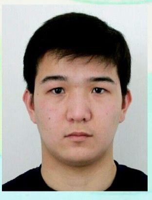

Мен туралы
Мен,Сүйіндік Заңғар Асылханұлы, 2009 жылы 26 Қаңтарда Шымкент қаласында дүниеге келдім. Отбасымда 5 адам бар:Анам,Әкем, мен, әпкем және інім. 2015 жылы Алматы қаласындағы N140 мектепте оқу бастадым.Арада 6 жыл өтіп 2021жылы Республикалық Физика-Математика мектебіне 7-сынып оқушысы ретінде оқуға түстім. Кіші кезімнен спортқа және білімге жақынмын. Математика және бизнес саласына қызығамын.Бос уақытымда спортпен айналысамын және кітаптар оқимын.


Фото
Менің жетістіктерім
Спорт: 1.Футболдан ҚР-ның 16 жасқа дейін жасөспірімдер арасында 2 рет 1-ші орын.2.Бокстан қалалық жарыста 2-ші орын. Білім: 1.Облыстық олимпиададан математика және ағылшын тілінен 1-ші және 3-ші орындар .2.Орыс тілі және Тарих сабақтарынан мектептік жарыстарда 1-ші орын.Экономика саласында қалалық олимпиададан 3-ші орын.
Таңдаған мамандығым
Мен кәсіпкерлікті таңдаймын, өйткені бұл сала маған еркіндік пен мұмкіндік береді.Мен өзім біреуге жұмыс жасағанды ұнатпаймын. Сондықтан,өз ісімді құрып, адамдарға пайда әкеліп, қоғамды дамыту – менің басты мақсатым. Мен қиындықтардан қорықпаймын, керісінше, оларды жаңа мүмкіндіктер деп көремін. Өз жолымды өзім салып, үлкен жетістіктерге жеткім келеді!

Тарихта атымды қалдыру
Менің арманым-табысты кәсіпкер болып,өз компаниямды ашып,жаңа адамзатқа көмектесетін зат ашқым келеді.Осы арқылы менің атым тарихта қалады.Бірақ, мен тек осы ғана арқылы тарихта қалғым келмейді.Мені барлық адамдар көп қиындықтан кейін,осындай адам болды деп айтқанын қалаймын.Осылайша мен барлық адамдарға мотивация боламын.Осы менің ең жеткім келетін мақсаттарымның бірі.